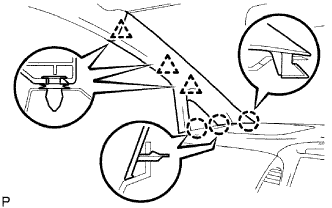

KÍNH CỬA SỔ LẮP CỐ ĐỊNH PHÍA TRƯỚC > LẮP |
| 1. LẮP ĐỆM TẤM TAI XE SAU |
Lắp một vòng đệm mới lên xe như được chỉ ra trên hình vẽ.
| 2. LẮP CÁI BẮT KÍNH |
Bôi sơn lót G lên kính ở đó có lắp các miếng đệm.
Lắp cái bắt móc mới vào kính như được chỉ ra trên hình vẽ.
| 3. LẮP KÍNH CHẮN GIÓ |
Dùng chổi hoặc miếng mút, bôi sơn lót M lên phần lộ ra của thân xe.
Dùng chổi hoặc miếng mút, bôi sơn lót G lên mặt tiếp xúc của kính.
Cắt đầu của các vòi keo như được chỉ ra trên hình vẽ.
| Nhiệt độ | Khung thời gian sử dụng |
| 35°C (95°F) | 15 phút |
| 20°C (68°F) | 1 giờ 40 phút |
| 5°C (41°F) | 8 giờ |
Lắp ống keo lên súng bắn keo.
Bôi keo làm kín lên kính như trên hình vẽ.
| Vùng | Điều kiện tiêu chuẩn |
| a | 8.0 mm (0.315 in.) |
| b | 6.0 mm (0.236 in.) |
Lắp kính cố định phía trước vào thân xe.
Giữ kính cố định phía trước chắc tại vị trí bằng băng dính hay tương đương cho đến khi keo động cứng hoàn toàn.
Eùp nhẹ mặt trước của kính để đảm bảo rằng kính đã được lắp chắc chắn lên thân xe.
| Nhiệt độ | Thời gian tối thiểu trước khi lái xe |
| 35°C (95°F) | 1 giờ 30 phút |
| 20°C (68°F) | 5 giờ |
| 5°C (41°F) | 24 giờ |
| 4. LẮP TRANG TRÍ TRỤ XE TRƯỚC TRÁI |
Lắp ốp trang trí bên dưới vào miếng ốp.
|  |
Cài khớp 3 vấu và 3 kẹp để lắp ốp trang trí.
| 5. LẮP MIẾNG ỐP TRANG TRÍ TRỤ XE TRƯỚC TRÁI |
| 6. LẮP GIOĂNG CỬA TRƯỚC TRÁI |
| 7. LẮP ỐP TRANG TRÍ VÁCH NGẮN BÊN TRÁI |
 |
Cài khớp 2 kẹp để lắp tấm ốp cửa.
Lắp đai ốc.
| 8. LẮP TẤM ỐP BẬU CỬA TRƯỚC TRÁI |
 |
Cài khớp 3 kẹp và 7 vấu để lắp ốp bậu cửa.
| 9. KIỂM TRA RÒ RỈ VÀ SỬA CHỮA |
Tiến hành thử rò rỉ sau khi keo làm kín đã đông cứng hoàn toàn.
Hàn bất cứ chỗ hở nào bằng keo kính.